前段时间项目中遇到了一个模块，是关于在线预览word文档（PDF文件）的，所以，找了很多插件，例如，pdf.js，pdfobject.js框架，但是pdfobject.js框架对于IE浏览器不兼容，所以，选择了使用pdf.js，这里记录一下，以后使用的时候好查找，也希望可以帮助有需要的人。
word文件转pdf文件
首先需要将指定的word文档转为pdf文件，方法有很多，这里不介绍，有需要的童鞋可以去网上下载即可。我这里用的是OpenOffice，版本是4.1.6，使用很简单，下载好了以后，根据提示进行安装，然后到任务管理器中，找到OpenOffice服务，开启即可，然后写一段代码，将word文件转为pdf文件，，这里附上我的转化代码。
public class office {
/*
* 获取每一个文件的名称
*/
public static void getFile(File file){
if(file != null){
File[] f = file.listFiles();
if(f != null){
for(int i=0;i<f.length;i++){
getFile(f[i]);
String filename = f[i].getName();
System.out.println(filename);
//System.out.println("PDF文件名："+filename.substring(0,14));
office2PDF("D:/test4/"+filename,"D:/pdf4/"+filename.substring(0,14)+".pdf");//根据自己需要获取pdf文件的文件名
}
System.out.println("*******************恭喜！转换结束了！！！******************");
}else{
//System.out.println(file);
}
}
}
/*
* word 转 pdf 方法
*/
public static int office2PDF(String sourceFile, String destFile) {
try {
File inputFile = new File(sourceFile);
if (!inputFile.exists()) {
return -1;
}
File outputFile = new File(destFile);
if (!outputFile.getParentFile().exists()) {
outputFile.getParentFile().mkdirs();
}
OpenOfficeConnection connection = new SocketOpenOfficeConnection("127.0.0.1", 8100);//端口是固定的，IP根据自己服务所在的服务器进行配置
connection.connect();
//获去连接
DocumentConverter converter = new OpenOfficeDocumentConverter(connection);
converter.convert(inputFile, outputFile);
//关闭连接
connection.disconnect();
return 0;
} catch (Exception e) {
e.printStackTrace();
return -1;
}
}
public static void main(String[] args) {
//单个文件转换
office2PDF("需要转换的word文件路径", "转换后输出pdf文件的路径");
//多个文件转换
String path = "多个word文件所在的目录";
File f = new File(path);
office.getFile(f);
}
}
使用pdf.js插件在线预览pdf文件
pdf文件转好后，开始使用pdf.js插件对pdf文件进行在线预览操作
下载pdf.js插件，进行解压，进入解压后的目录 build/build/generic，generic中的目录，如下图所示
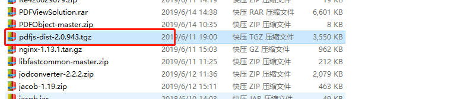
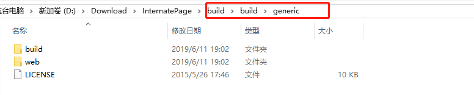
进入web目录，找到viewer.js文件，打开，
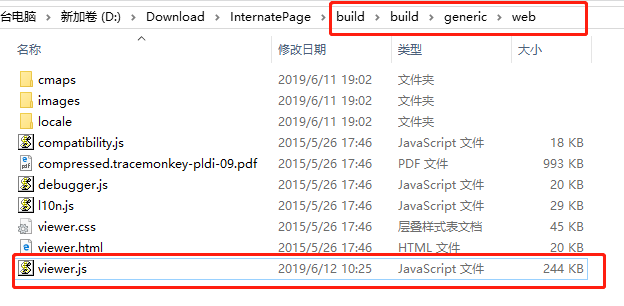
找到这行代码，这里是指定打开默认的pdf文件，在web目录中存在一个同名的pdf文件，这个就是默认打开的文件。在pdf.js中，主要的文件有两个，viewer.js以及viewer.html，前者负责打开pdf文件，后者负责渲染效果，将generic文件，复制到tomcat中（我这里用的tomcat，根据自己实际情况即可），启动tomcat，
通过访问路径 http://localhost:8080/build/generic/web/viewer.html 可以看到效果，打开默认的pdf文件，如图
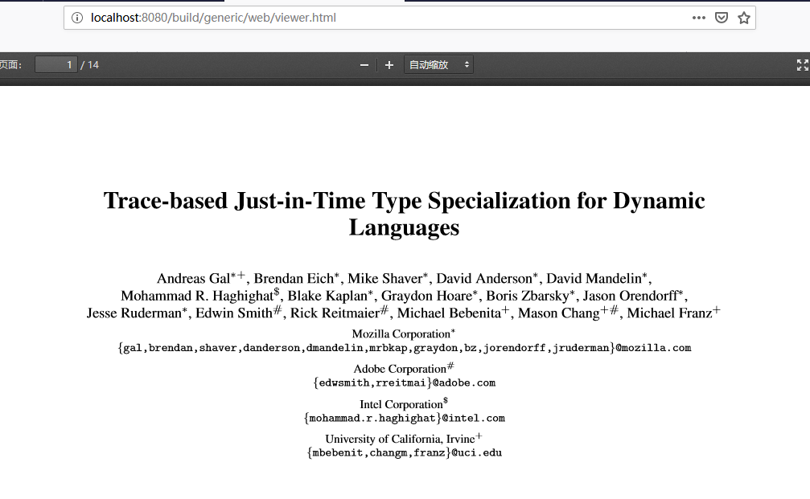
此时，再看viewer.js，找到如下代码，
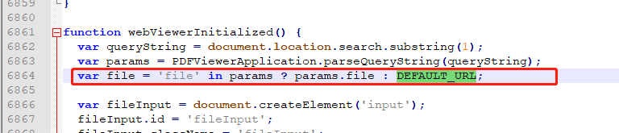
说明，我们可以通过file传参的形式，来访问我们想访问的pdf文件，所以，删除js文件中默认的pdf文件，将DEFAULT置空
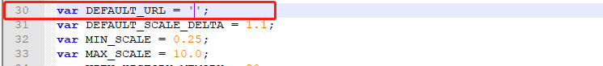
然后，我们访问带file参数的路径，访问我们自己的pdf文件，将pdf文件放在指定的路径下，这里我直接放在了web下，可以自己指定路径，
访问路径：http://localhost:8080/build/generic/web/viewer.html?file=FJ050609150001.pdf，效果如图
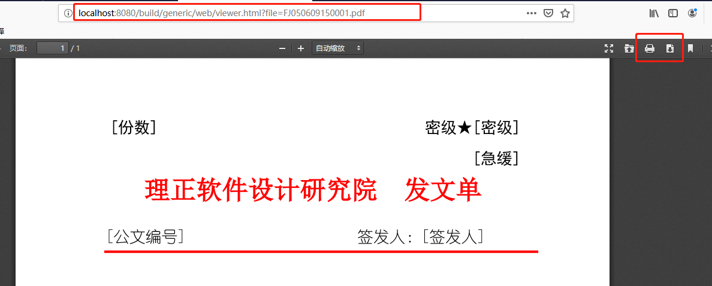
按钮隐藏
这样我们就访问到了我们想要的pdf文件。很多时候，线上预览，是不允许有下载和打印的，如上图右上角的打印和下载按钮，我们都可以通过修改viewer.html里面的按钮属性，来进行隐藏。打开viewer.html文件，找到如下代码
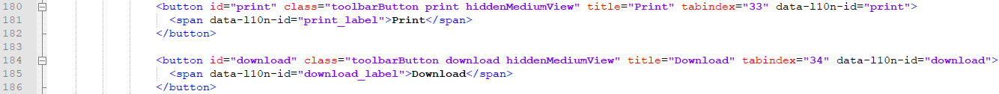
然后在<button>标签内部，加上隐藏样式：style="visibility:hidden"，就可以隐藏下载或者是打印按钮
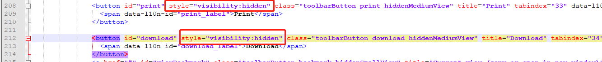
添加后，效果如图
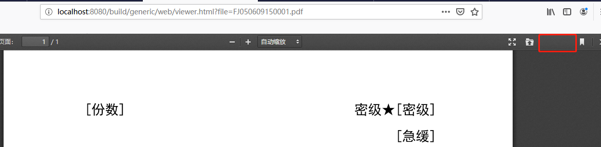
注意：
1，常用的隐藏标签方法有，style="visibility:hidden"，style = "display:none"等等，但是只能使用style="visibility:hidden"来隐藏标签（其余的我也试过，但是不管用，隐藏不了）。
2，viewer.html中有两个地方有按钮，如图，
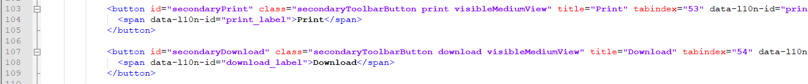
以及
我们要设置隐藏的，只有下面的一组按钮标签，上面的不能设置隐藏，否则，可能会报错。
3，按钮标签不能删除，否则可能会报错，并且，pdf.js是比较简单的在线浏览pdf文件的插件，我们只需要改动viewer.js和viewer.html就可以实现，其他的地方不用改动，否则会报错。